Figure fig_ch04_p067_01 (Page 67)
Figure fig_ch04_p067_01 (Page 67)
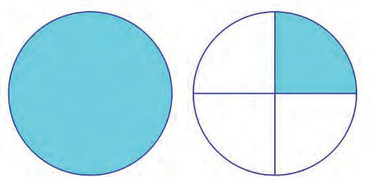
Figure fig_ch04_p067_02 (Page 67)
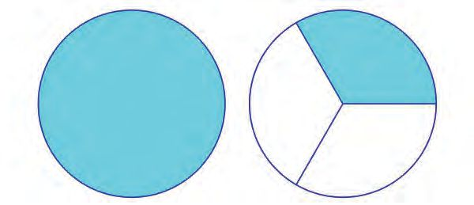
Figure fig_ch04_p067_03 (Page 67)
 Figure fig_ch04_p068_01 (Page 68)
Figure fig_ch04_p068_01 (Page 68)
 Figure fig_ch04_p068_02 (Page 68)
Figure fig_ch04_p068_03 (Page 68)
Figure fig_ch04_p068_02 (Page 68)
Figure fig_ch04_p068_03 (Page 68)
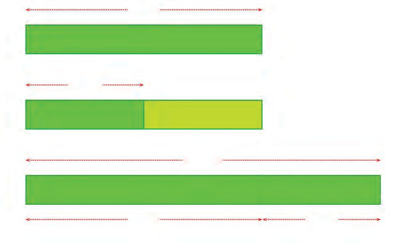
Figure fig_ch04_p068_04 (Page 68)
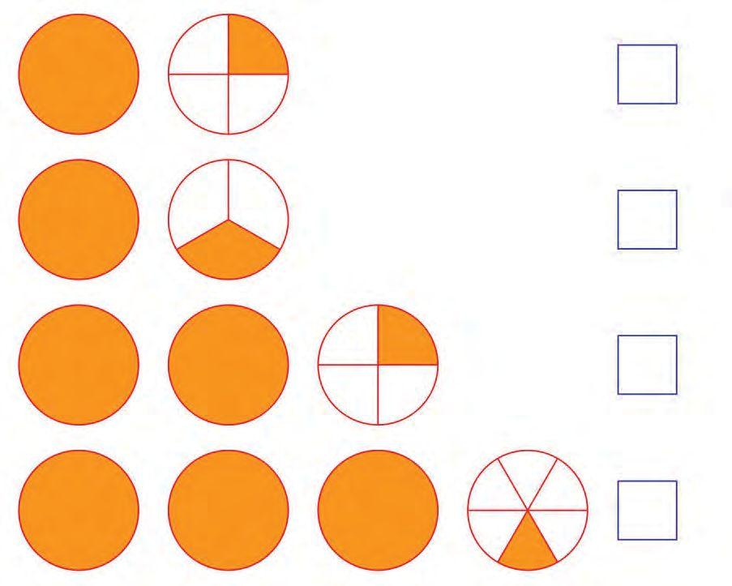
Figure fig_ch04_p068_05 (Page 68)
Figure fig_ch04_p069_01 (Page 69)
Figure fig_ch04_p069_02 (Page 69)
Figure fig_ch04_p069_03 (Page 69)
 Figure fig_ch04_p070_01 (Page 70)
Figure fig_ch04_p070_01 (Page 70)
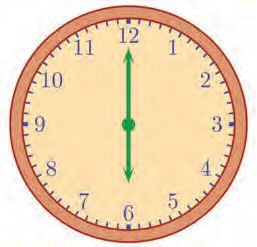
Figure fig_ch04_p070_02 (Page 70)
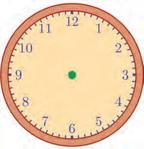
Figure fig_ch04_p070_03 (Page 70)
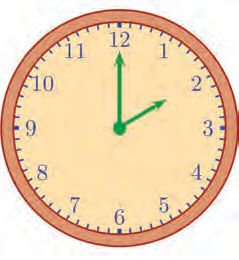
Figure fig_ch04_p070_04 (Page 70)
 Figure fig_ch04_p071_01 (Page 71)
Figure fig_ch04_p071_01 (Page 71)
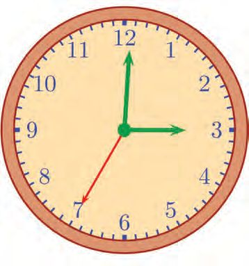
Figure fig_ch04_p071_02 (Page 71)
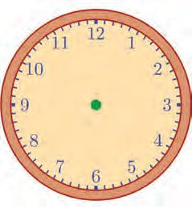
Figure fig_ch04_p071_03 (Page 71)
 Figure fig_ch04_p072_01 (Page 72)
Figure fig_ch04_p072_01 (Page 72)
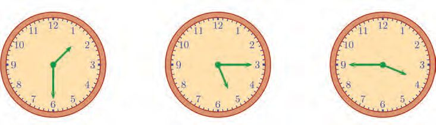
Figure fig_ch04_p072_02 (Page 72)
 Figure fig_ch04_p073_01 (Page 73)
Figure fig_ch04_p073_02 (Page 73)
Figure fig_ch04_p073_03 (Page 73)
Figure fig_ch04_p073_01 (Page 73)
Figure fig_ch04_p073_02 (Page 73)
Figure fig_ch04_p073_03 (Page 73)
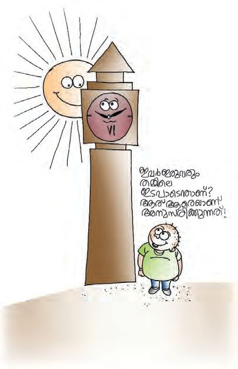
Figure fig_ch04_p073_04 (Page 73)
 Figure fig_ch04_p074_01 (Page 74)
Figure fig_ch04_p074_01 (Page 74)
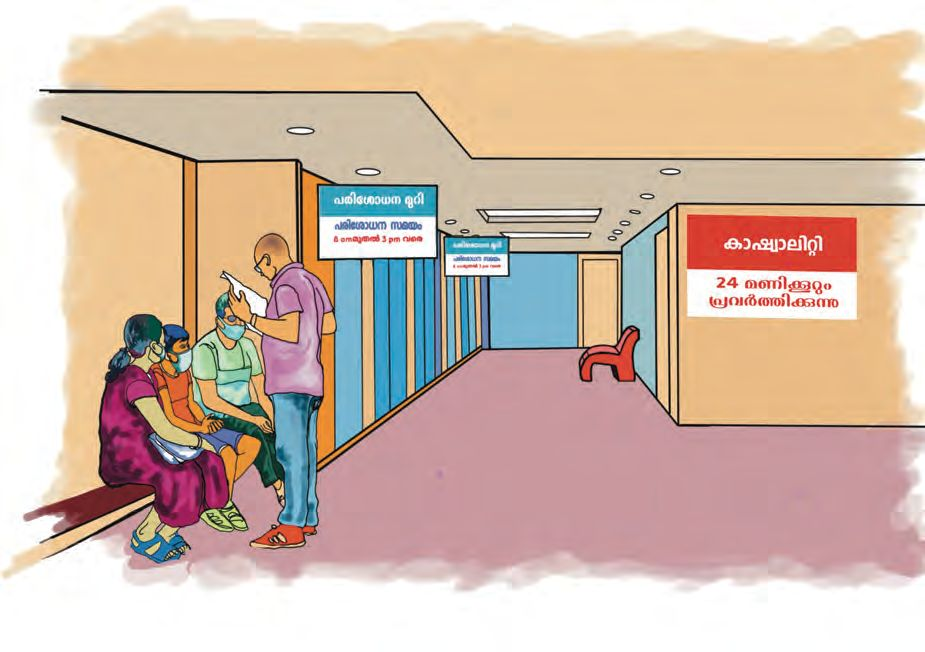
Figure fig_ch04_p074_02 (Page 74)
Figure fig_ch04_p074_03 (Page 74)
Figure fig_ch04_p074_04 (Page 74)
 Figure fig_ch04_p075_01 (Page 75)
Figure fig_ch04_p075_02 (Page 75)
Figure fig_ch04_p075_01 (Page 75)
Figure fig_ch04_p075_02 (Page 75)
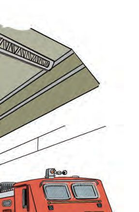
Figure fig_ch04_p075_03 (Page 75)
Figure fig_ch04_p075_04 (Page 75)
Figure fig_ch04_p075_05 (Page 75)
Figure fig_ch04_p075_06 (Page 75)
 Figure fig_ch04_p076_01 (Page 76)
Figure fig_ch04_p076_02 (Page 76)
Figure fig_ch04_p076_01 (Page 76)
Figure fig_ch04_p076_02 (Page 76)
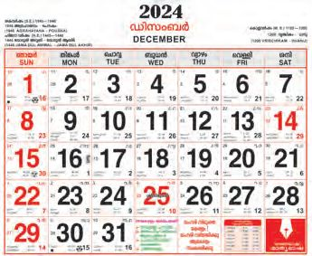
Figure fig_ch04_p076_03 (Page 76)
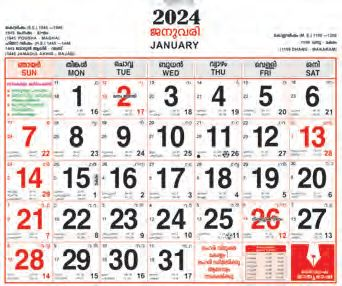
Figure fig_ch04_p076_04 (Page 76)
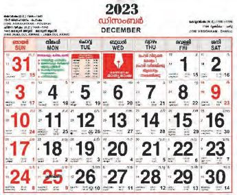
Figure fig_ch04_p076_05 (Page 76)
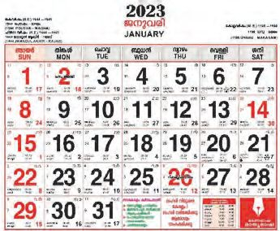
Figure fig_ch04_p076_06 (Page 76)
 Figure fig_ch04_p077_01 (Page 77)
Figure fig_ch04_p077_02 (Page 77)
Figure fig_ch04_p077_03 (Page 77)
Figure fig_ch04_p077_01 (Page 77)
Figure fig_ch04_p077_02 (Page 77)
Figure fig_ch04_p077_03 (Page 77)
 Figure fig_ch04_p078_01 (Page 78)
Figure fig_ch04_p078_02 (Page 78)
Figure fig_ch04_p078_01 (Page 78)
Figure fig_ch04_p078_02 (Page 78)
 Figure fig_ch04_p078_03 (Page 78)
Figure fig_ch04_p078_03 (Page 78)
 Figure fig_ch04_p078_04 (Page 78)
Figure fig_ch04_p078_04 (Page 78)
 Figure fig_ch04_p080_01 (Page 80)
Figure fig_ch04_p080_01 (Page 80)